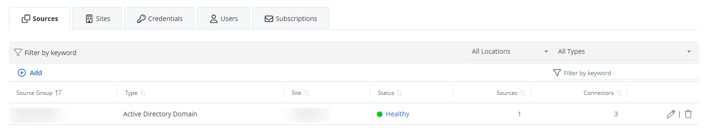

View Tabs and Dashboards for the Organization
After adding an organization, you can view available tabs for the organization on the Managed organizations page.
View Tabs for an Organization
The Managed organizations page has the following tabs:
- Sources – Add, edit, or delete sources for your organization, review its statuses, and so on. See the Sources and Connectors topic for additional information.
- Sites – View the sites and status of your Netwrix Cloud Agent. See the Update Netwrix Cloud Agent) topic for additional information.
- Credentials – Review and edit the credentials of your organization. See the Manage Credentials) topic for additional information.
- Users – Review or add Business Viewers or Co-managing Administrators to the audited organization. See the Add Users) topic for additional information.
- Subscriptions– Review or edit the subscriptions of your organization. See the Subscriptions topic for additional information.
In addition to the tabs, the right upper corner of the page has the following options:
- Edit – Edit the settings of your organization, by specifying the tags or risk profile
- View dashboard – View the dashboards for the organization
View the Dashboard for an Organization
Once you select View dashboard on your organization's tab, you can view the predefined dashboards with the data applicable to your organization. These includes the following dashboards:
- New investigation – Search incidents, create reports, and browse your data
- Risk Assessment Dashboard – Go to Risk Assessment Dashboard to review risks of your organization
- Saved Custom Reports – Look through the list of the created custom reports
- Alerts Timeline – Review the activity of the alerts on the time schedule
- Changes by date – Review the report on changes in your connector activities by date
- Failed Login Activity Trend – Review the report on failed logon activity for your connector
- Accounts With Most Logon Activity – Review the report on various AD logon activity. This shows the most active accounts for the organization.
- Who Made Most Changes (Past 7 days) – View schedule for the user with most activity for the past 7 days
To get back to the organization tabs, click Configure on the upper right of the page.